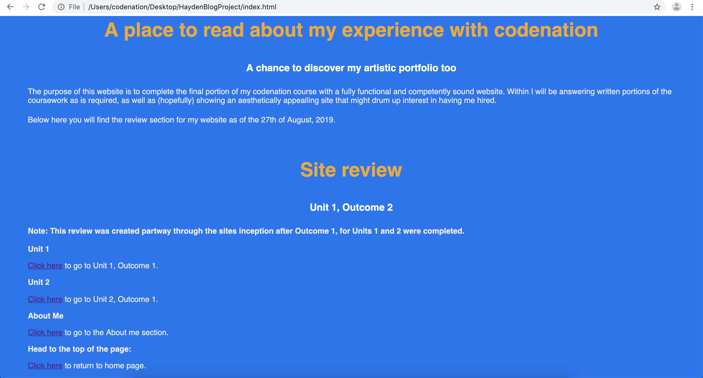

The purpose of this website is to complete the final portion of my codenation course with a fully functional and competently sound website. Within I will be answering written portions of the coursework as is required, as well as (hopefully) showing an aesthetically appealling site that might drum up interest in having me hired.
Below here you will find the review section for my website as of the 27th of August, 2019.
Note: This review was created partway through the sites inception after Outcome 1, for Units 1 and 2 were completed.
So far I’m happy with the tools the class has been using using. Although I originally struggled to grasp some of the syntax when working with Javascript, VS Code has proven immensely useful for typing in a HTML format, having the red underscore for mistakes and a repository of terms pre-selected and logged by the system provides handy shortcuts whilst typing, and is helping me keep on track with spelling mistakes.
Trello itself isn’t something I’ve really been checking to keep track of my own work, as I’m relatively aware of how far along I am. That said I find it easy to organise and I believe it’s been useful in segmenting the written portions of work I’ve done so far. Having it in a public view also means that it’s an effective backup if anything ever happens to my text documents, which I use to start with typing up my thoughts before transferring them to VS Code or Trello in tandem.
Overall speed has been fine, and even with the somewhat neutered time-span thanks to the bank holiday Monday that we had, I’m confident I can get what I’ve set out to do, finished.
To reiterate, Trello has been a useful way pop depositing the various portions of the Unit outcomes, and its relevance to the website is somewhat limited, but the website is handy as a background tool if any information becomes corrupted, gets muddled etc. That doesn’t mean however that I’ve relied on pasting different types of Syntax into there at this moment in time (although thinking about it now the prospect is appealing, it’d act as a quick place to give each form of syntax context if I ever get confused with some of what I’m typing in the future.
VS Code, to put it simply, is a lifesaver; Dreamweaver was the last programme I used to put together a website, both back in school and college and in comparison VS Code is lightyears ahead with it’s handy repository or terms, terminal, and ability to save multiple file types. I cannot begin to tell you how useful it is to be able to actually see what’s wrong with my webpage instead of playing a 2 hour guessing game trying to spot what went wrong. The tool’s dark-mode has proven useful for the eyes as well, eye strain seems to come to me easier if I’m looking at dark text on a white background, so the Dark-mode has given me a few hours of additional comfort in the class. Overall I’d say both have been appropriate tools to use for this project. Trello being the non-essential, but a good idea to keep handy, and VS Code being the absolute must for building something quickly and effectively.
So far Im relatively pleased with what I’ve created. The current version of the website, is very basic:
,So just getting the affirmation that the syntax I’ve put in to constrain the text, change the font-type, and alter the font types colour, is so far enough to please me. That said I’d be remiss to not go over improvements, and I think one that I could do with is reigning in the colour scheme a bit sooner. The preview image you can see has a colour scheme similar to codenation with varying shades in the main bodies of text. Honestly I should’ve saved a final copy of my pallet ahead of time to copy from. As it stands I need to get that done.
Other things I would comment on would be the rate I can produce art, I sincerely hope I can produce some clean looking appealing imagery to use. So far though the body of text is relatively fine, Including some reference links for one or two of my answers will basically make it as good as it can be without becoming an information sink. I want to avoid making all the pages a TL:DR fare if possible. (Immediately after typing this I had to change the websites colour so the PNG could be distinguished correctly).
Unit 1
Click here to go to Unit 1, Outcome 1.
Unit 2
Click here to go to Unit 2, Outcome 1.
About Me
Click here to go to the About me section.
Head to the top of the page:
Click here to return to home page.